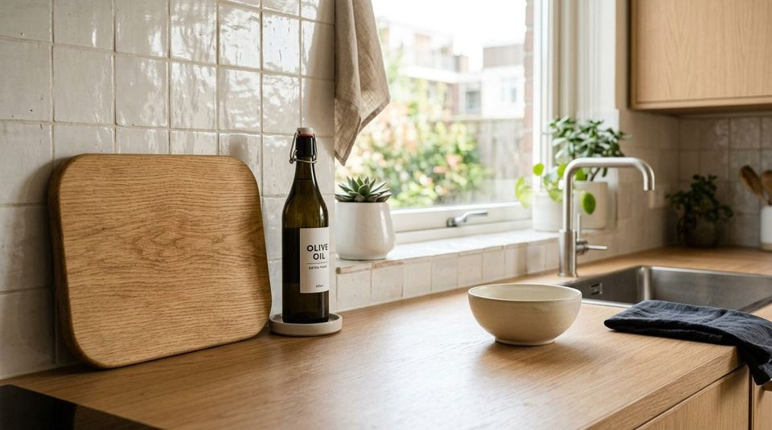

You spend twenty minutes wiping down your kitchen counters on a Sunday afternoon until the quartz gleams. Two hours later, you walk back into the room to grab a glass of water, and the surface is already covered with small, miscellaneous objects:
- An empty ceramic coffee mug sitting beside the espresso maker
- A wooden cutting board resting on the island with a single bread knife
- An open bag of snacks folded in half on the countertop
- A rinsed bowl waiting awkwardly beside the sink basin
- A bottle of olive oil sitting next to the stovetop
When counters constantly attract clutter, our first assumption is usually that our kitchen lacks storage, that our cabinets are badly organized, or that we need to buy more organizer bins. But in most real-life homes, none of those things are true.
Everyday kitchen counter clutter rarely happens because of bad storage. It happens because small tasks stop one physical step too early.
The Last-Step Rule is a simple, repeatable behavioral framework for calmer kitchen surfaces: USE → FINISH → RESET. It transforms kitchen organization from an exhausting daily chore into a frictionless micro-habit.
The Mystery of the Rapidly Cluttering Counter
Kitchen countertops are the primary work surface in any home. Because they are flat, accessible, and at waist height, they naturally catch everything you touch.
When you finish pouring a cup of coffee, your brain checks the primary goal off your mental list: “I made coffee.” Because the goal is achieved, you walk away to start your morning. But the mug, the spoon, and the coffee grounds canister are left behind in a state of suspended animation.
Multiply that single trailing action by three family members and four meals a day, and your kitchen surfaces become permanently congested. To understand how to separate permanent essentials from temporary items, explore our companion framework on the next-action rule for kitchen counters.
What Is the Last-Step Rule?
The Last-Step Rule defines the complete physical lifecycle of any kitchen item:
USE → FINISH → RESET

Here is how the three stages work in practical terms:
1. USE — The Core Activity
You use the item to accomplish your immediate culinary task (e.g., brewing coffee, slicing an apple, cooking dinner).
2. FINISH — The Trailing Physical Step
You complete the immediate physical step that naturally concludes the task (e.g., rinsing the blade, wiping the crumbs off the board, sealing the clip on the bread bag).
3. RESET — The Final Placement
You return the item to its designated storage home or next transition station (e.g., sliding the cutting board into its slot, putting the oil back in the pantry, placing the mug in the dishwasher).
"Kitchen clutter doesn't start because you own too much. It starts when small everyday actions stop one physical step too early."
Why Small Unfinished Tasks Become Counter Clutter
Counter clutter is rarely composed of large appliances or massive storage boxes. It is almost always a cumulative pile of micro-items left at stage one:
+ 1 Lingering Cutting Board
+ 1 Unsealed Snack Package
+ 1 Stray Spatula on the Stove
= A Countertop That Feels Visually Chaotic
When three unrelated items linger on the counter, they create a visual precedent. It signals that the surface is currently an active dumping ground, making it effortless to set down mail, car keys, and grocery receipts on top of the mess.
To see how smart appliance placement keeps open prep zones clear, check out our guide on organizing small kitchen appliances without losing counter space.
The Rule in Everyday Kitchen Situations
Notice how small the difference is between leaving an item stranded and completing its reset:
| Daily Task | USE (The Action) | FINISH (The Natural Step) | RESET (The Last Step) |
|---|---|---|---|
| Morning Coffee | Brew espresso & froth milk | Rinse milk wand & wipe spill | Return syrup to cabinet; mug to dishwasher |
| Snack Prep | Slice cheese & apple | Rinse knife & wipe board | Slide board upright; put cheese in fridge |
| Evening Cooking | Season with oil and spices | Screw caps tightly onto jars | Return spice rack jars and oil bottle to pantry |
For quick access to your most frequently used seasonings, explore our tutorial on organizing spices for visibility and easy reach.
The Difference Between "Done" and "Reset"
The most important mental shift of the Last-Step Rule is distinguishing between task completion and item reset:
- “I'm done with my sandwich” describes your appetite. It does not describe the mustard jar, the knife, or the cutting board.
- “The item is reset” means the mustard is back in the refrigerator door, the knife is in the sink, and the counter is wiped down.
When you train your eyes to notice whether an item has completed its physical journey, resetting surfaces takes less than five seconds per interaction.
This principle pairs directly with the point-of-use storage rule, ensuring that storage locations are close enough to make resetting frictionless.
How to Use the Rule Without Turning It Into a Cleaning Marathon
The Last-Step Rule is intentionally narrow in scope. It is not a command to scrub stovetops, deep-clean ovens, or empty every cabinet drawer.
Whenever you notice an object sitting on the counter, ask one single question:
“What is the obvious next physical step for this one item?”
If the answer takes less than ten seconds (putting the butter back in the fridge, dropping a spoon in the dishwasher, hanging a dish towel on the oven handle), complete that single step immediately. If you have to walk away, that is fine—but completing the last step on even two items per meal keeps counters permanently calm.
A Simple 2-Minute Kitchen Counter Reset
When you walk into the kitchen before bed or after work, use this 5-step observational reset:
- Scan the Workspace: Look strictly at the open prep area between the sink and stovetop.
- Spot the Trailing Items: Identify the 2–3 items currently lingering from earlier meals.
- Execute the Last Step: Put away food containers, rinse cutting boards, and place dishes in the dishwasher.
- Wipe the Prep Zone: Give the open prep square a single 10-second wipe with a damp microfiber cloth.
- Stop: Do not start cleaning cabinets or organizing deep drawers. Protect the reset and walk away.
For more cabinet layout ideas, see our complete guide to kitchen cabinet organization in small kitchens.
When the Last-Step Rule Does NOT Mean "Put Everything Away"
It is important to emphasize that the Last-Step Rule is not an extreme minimalist mandate to hide every appliance:
- Active Ongoing Tasks: If you are marinating chicken for dinner in two hours, that dish legitimately belongs on the counter. The task is not finished.
- Daily Fixed Equipment: An electric kettle, a toaster used every morning, or an everyday knife block do not need to be hidden away after every use.
- Drying Racks & Mats: Clean dishes air-drying on a linen mat are actively in their FINISH stage.
The rule is designed to eliminate accidental clutter—items that have completed their task but were simply abandoned mid-transition.
The Goal Is a Usable Counter, Not a Showroom
A kitchen is a workshop, not an art gallery. A successful kitchen is one where preparing a meal is enjoyable because you aren't fighting for six inches of cutting space among dirty bowls and cereal boxes.
By protecting your primary prep counter with the Last-Step Rule, cooking becomes faster, cleaning takes less energy, and your kitchen remains an inviting, calm space to start every morning.
The Last-Step Rule at a Glance
USE → Use the item for your task
FINISH → Complete the next physical step
RESET → Return it to its home
When you notice a temporary item on the counter, ask what step is still unfinished.
For more smart culinary storage tips, browse our full collection of kitchen organization ideas & storage systems.
Frequently Asked Questions
The Last-Step Rule is a behavioral framework (USE → FINISH → RESET) that prevents counter clutter by ensuring items are physically transitioned to their next destination rather than left sitting on countertops when a task ends.
Cleaning involves scrubbing surfaces, washing floors, and deep sanitization. The Last-Step Rule is a decision-making habit focused strictly on completing the trailing transition step of items you just finished using.
Make storage locations completely obvious and friction-free. When trash bins, cutting board racks, and dishwasher access take zero effort to reach, completing the last step becomes second nature.